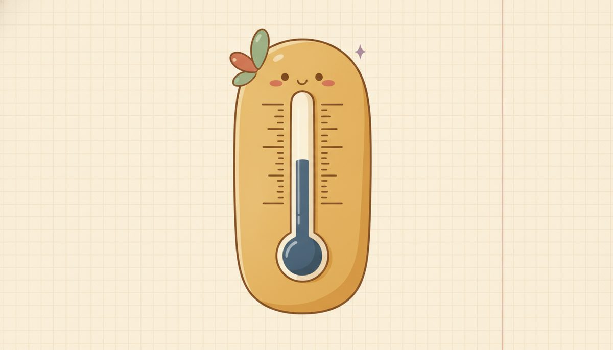

Factors and exponents

This is a short one, and it pulls together a few words you'll lean on later. Start with two that come straight from multiplying. When you multiply, the numbers you multiply are the factors, and the answer is the product: in 2 × 3 = 6, the factors are 2 and 3, and 6 is the product.
Turn that around and you can talk about one number's factors. The factors of a number are the whole numbers that multiply to give it, the same ones that divide into it evenly with nothing left over. To find them, walk up from 1 and keep the ones that divide in cleanly. The factors of 6 are 1, 2, 3, and 6, since 1 × 6 and 2 × 3 both make 6.
Notice that the factors come in pairs that multiply to the number: 1 with 6, and 2 with 3. That pairing is why walking up from 1 finds them all, because each small factor points you to its partner. And two factors are always on the list no matter what: 1, and the number itself.
The factors of 12 are 1, 2, 3, 4, 6, and 12. You can see why by laying 12 squares into rectangles: a 1 × 12 strip, a 2 × 6 block, and a 3 × 4 block. Each rectangle's two side lengths are a factor pair 1.4.f1.
That pairing also sorts numbers into two kinds. A few numbers, like 7, have only the smallest possible list: 1 and themselves, two factors and no others. A number like that is prime. Most numbers have more, like 6 with its four factors, and those are composite. The number 1 is the odd one out: it has only a single factor, itself, so it counts as neither prime nor composite.
Primes are the building blocks, and that's where prime factorization comes in. Take any whole number bigger than 1 and keep breaking it into factors until only primes are left. For 12, you might start 12 = 4 × 3, then break the 4 into 2 × 2, landing on 12 = 2 · 2 · 3. Every whole number bigger than 1 has exactly one such breakdown, apart from the order.
Now to a piece of notation Lesson 1.3 already used but never named. When you saw 3², that small raised number is an exponent, and it's just shorthand for repeated multiplication. The base is the number being multiplied, the exponent counts how many copies, and the result is called a power. So 2³ = 2 · 2 · 2 = 8: base 2, multiplied three times.
The trap to dodge is reading the exponent as "multiply by." In 2³ the 3 counts the factors of 2; it does not say "times 3." That's why 2³ is 8, not 6. Two of these have their own words: a base to the 2 is a square (5² = 25, read "5 squared"), and to the 3 a cube (2³ = 8, read "2 cubed").
Exponents also tidy up a prime factorization. When a prime repeats, you can stack it under one exponent: 12 = 2 · 2 · 3 becomes 12 = 2² · 3. That compact form is the single spot where factors, primes, and exponents all meet on one line.
New words
- 1.4.d1 Factor / product: in a multiplication, each number being multiplied is a factor, and the result is the product (in 2 × 3 = 6, the factors are 2 and 3, and 6 is the product). The factors of a whole number are the whole numbers that divide it evenly, with nothing left over: the factors of 12 are 1, 2, 3, 4, 6, and 12. 1 and the number itself are always factors. (Noun only here; "to factor" an expression waits for Unit 11.)
- 1.4.d2 Prime / composite: a prime number has exactly two factors, 1 and itself (2, 3, 5, 7, 11, …); a composite number has more than two (6 has 1, 2, 3, 6). 1 is neither prime nor composite, since it has only one factor.
- 1.4.d3 Prime factorization: writing a whole number as a product of primes only, e.g. 12 = 2 · 2 · 3. Every whole number bigger than 1 has exactly one such breakdown (apart from the order), so it ties factors and primes together.
- 1.4.d4 Exponent / base / power: an exponent is shorthand for repeated multiplication: in 2³ the base 2 is multiplied 3 times, 2³ = 2 · 2 · 2 = 8, and the whole thing (8) is a power of 2. A base to the 2 is a square (5² = 25), to the 3 a cube (2³ = 8).
Worked example
- 1.4.w1 Find the factors of 24. Walk up from 1 and keep every number that divides 24 cleanly: 1, 2, 3, 4, 6, 8, 12, and 24. They come in pairs that multiply to 24, 1 · 24, 2 · 12, 3 · 8, and 4 · 6, which is why working up to the partner of each one finds them all.
- 1.4.w2 Prime or composite? 7 has only the factors 1 and 7, exactly two, so 7 is prime. 15 has 1, 3, 5, and 15, more than two, so 15 is composite (you can see it as 3 · 5).
- 1.4.w3 Read 2³. The base is 2 and the exponent is 3, so 2 is multiplied 3 times: 2³ = 2 · 2 · 2 = 8. The exponent counts how many factors of the base there are, not what to multiply by, so 2³ is 8, not 6.
- 1.4.w4 A square and a cube. 5² = 5 · 5 = 25 (5 squared), and 3³ = 3 · 3 · 3 = 27 (3 cubed). "Squared" is the exponent 2, "cubed" is the exponent 3.
- 1.4.w5 Write the prime factorization of 12. Break it into factors, then keep breaking until only primes are left: 12 = 4 · 3 = 2 · 2 · 3. Using an exponent for the repeated 2, that is 12 = 2² · 3.
- 1.4.w6 Write the prime factorization of 18. 18 = 2 · 9 = 2 · 3 · 3, which is 2 · 3² with an exponent on the repeated 3. Notice the exponent lands on whichever prime repeats, here the 3, not the 2.
Check yourself
- 1.4.c1 List all the factors of 16, and name the pairs that multiply to 16. (1, 2, 4, 8, 16; the pairs are 1 · 16, 2 · 8, and 4 · 4. The 4 pairs with itself, which is why 16 is a perfect square.)
- 1.4.c2 Is 21 prime or composite? Say how you know. (Composite: besides 1 and 21 it also has the factors 3 and 7, since 3 · 7 = 21, so it has more than two factors.)
- 1.4.c3 Rewrite 2 · 2 · 2 · 2 using an exponent, then find its value. (Four factors of 2, so 2⁴ = 16.)
You can now name a number's factors and the product they make, tell a prime from a composite, write a number as a stack of primes, and read an exponent as repeated multiplication, including squares and cubes.